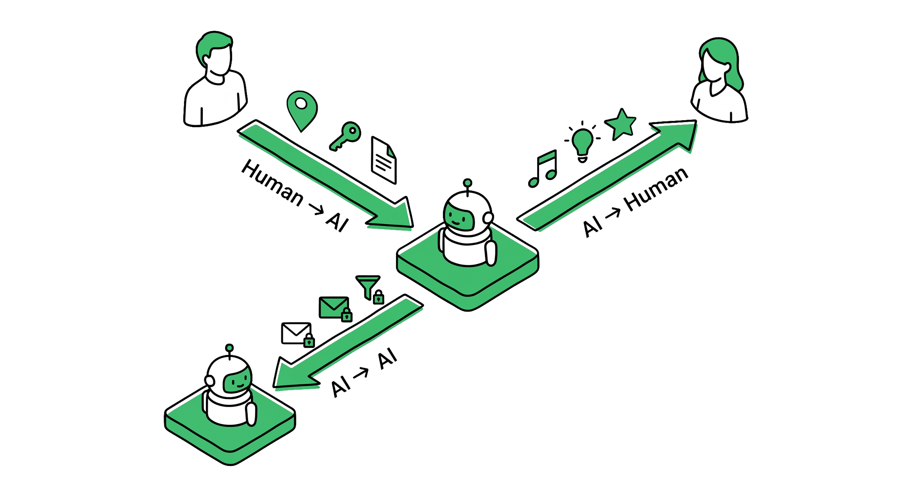

初めて入ったレストランでは、メニューをじっくり読んで、慎重に注文して、様子を見る。料理が良ければまた来る。10回目には、座る前にいつものビールが出てくる。100回目には「おまかせで」と言えば、完璧な一皿が届く。
2つの違い
2つの別の問い
Disclosure と Autonomy は関係があるように見えるが、同じ問いではない。混同すると、AIプロダクトの設計が壊れる。
Disclosure Dial
AIはどこまで知れるか？
情報アクセスの制御 — ドメインごと、人ごとに、自分の何をAIに見せるか。窓のブラインドをどこまで開けるか、というイメージ。
- 医療AI：全開示 — 病歴、薬、パターンすべて
- SNS AI：ゼロ — トピックのみ
- 金融AI：サマリー — 大カテゴリのみ、明細なし
- 同じ人でも、ドメインごとに設定が異なる
vs
Autonomy Dial
AIはどこまで動けるか？
判断の委任 — どこまで判断と実行をAIに任せるか。4段階：Suggest、Confirm、Notify、Auto。
- 毎週の食料品：Auto — 好みが分かっていて予算も決まっている
- 高額な買い物：Confirm — 先に見せてほしい
- 新しいサブスク：Suggest — 自分が決める
- 任せる度合いはドメインと実績によって変わる
覚え方： Disclosure は窓 — どれだけ光を通すか。Autonomy はハンドル — 誰が運転しているか。窓を全開にしたままハンドルを自分で握ることもできる。逆に — ハンドルを手放しながら窓を塞ぐ — そこで論理が破綻する。なぜかはセクションCで説明する。
Protective
Protect — 開示する情報をコントロールする

01
Full
すべてを共有する。AIは深くパーソナライズされた判断ができる。
医療AI：健康データをすべて開示
02
Summary
概要のみ共有。慎重に動くには十分だが、最適化には不十分。
フィットネスAI：「あまり活動的でない」とだけ伝える

03
Existence
何かがあることは分かるが、内容は分からない。AIは特に慎重に動く。
旅行AI：「食事制限あり」とだけ伝える

04
Hidden
AIは何も知らない。汎用的な応答のみ。安全で非個人的。それが正解の場合もある。
趣味AI：健康データは非開示
Connective
Connect — 互いの世界をつなぐ
01
Push
新しいものが出たらすぐ通知する。積極的に共有したい人向け。
娘の作品投稿：家族にすぐ通知

02
Digest
週1回のまとめ。大量の情報を本質だけに絞る。
妻のダンス動画：週1回、30秒ハイライト

03
Available
聞かれたときだけ。ライブラリは開放されているが、通知は送らない。
パパのKindle：娘が見たいときに閲覧可能
04
Off
このドメインは家族にも共有しない。完全にプライベート。
娘のプライベートプレイリスト：非共有
Disclosureの構造
情報は3方向に流れる
Disclosure Dial は「AIに伝えるかどうか」だけを制御するわけではない。情報は3つの異なる方向に流れ、それぞれ独自の粒度と権限を持つ。

Human → AI
Disclose
Protective方向。どのデータをAIに渡すか。ドメインごと、AIサービスごとに設定する。
健康データ：医療AIにはFull、趣味AIにはHidden
AI → Human
Share · Filter
Connective方向。AIが家族の興味を適切な粒度でつなぐ — 必要なものを届け、不要なものを絞る。
息子のMinecraft BGM：パパのSpotifyに提案
AI ↔ AI / External
Sync · Selective Disclosure
第三者や他の人のAIへの制御された共有。本人の意図をもとに、何を、誰に、いつ渡すかをAIが判断する。
医療情報：ママにはFull、パパにはSummary、学校にはHidden
なぜ3方向なのか。 Google Family Link、Samsung Kids Mode、OSレベルのプライバシー設定はいずれも、開示を1つのバイナリ — 共有するか、しないか — でモデル化している。「ママには全詳細、パパにはサマリー、学校にはHidden、さらに学校ポータルへのAI間選択的共有」という粒度は、今日どのプラットフォームにも存在しない。Disclosure Dial は、3つの流れをひとつの統一モデルで設計する。